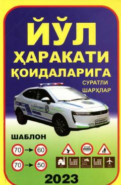

YHOʻzbekiston yoʻl harakati qoidalari boʻyicha suratli sharhlar va testlar toʻplami.
Ushbu oʻquv-uslubiy qoʻllanma Oʻzbekiston Respublikasi yoʻl harakati qoidalarining yangi tahririni suratli sharhlar va mavzuga oid testlar bilan tushuntiradi. Kitob haydovchilar, piyodalar va haydovchilik guvohnomasini olishga nomzodlar uchun moʻljallangan.